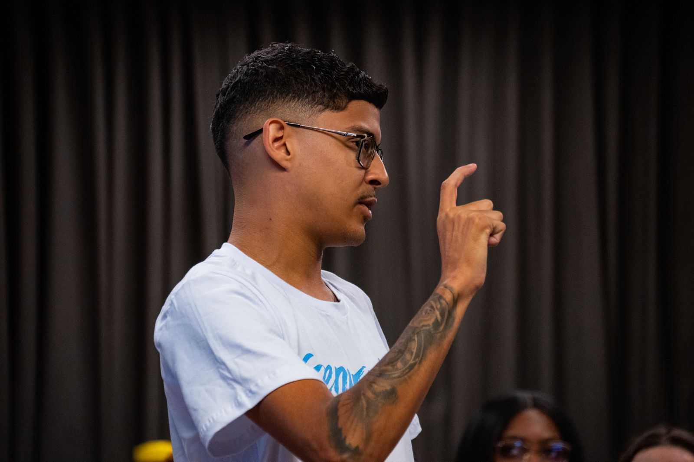

Imagine um profissional capaz de combinar a experiência prática com a paixão pela tecnologia para entregar soluções inovadoras. Desde os 15 anos, desenvolvi habilidades de comunicação e trabalho em equipe na área comercial, aprendendo a resolver problemas de forma eficaz e a colaborar com colegas e clientes. Sou Wilker, desenvolvedor Java Full Stack, em transição de carreira. Com conhecimento em tecnologias como Java, Spring, HTML, CSS e JavaScript, criei projetos robustos, incluindo um blog pessoal que utiliza injeção de dependência, gerenciamento de rotas e persistência de dados com JPA. Meu background comercial me deu uma perspectiva única e a capacidade de trazer soluções inovadoras para os desafios tecnológicos. Esse projeto eu fiz com os conhecimentos e ajuda que tive com o bootcamp da generation brasil, onde aperfeiçoei ainda mais meus conhecimentos técnicos e não técnicos. Fora do ambiente profissional, gosto de ficar com a minha filha, gosto de ler, tenho meu hoby que e colecionar miniaturas de carrinhos e pratico esporte o que me ajuda a manter um equilíbrio saudável entre a vida pessoal e profissional. Acredito que minha trajetória diferenciada me torna um ativo valioso para qualquer equipe de desenvolvimento. Vamos marcar uma reunião para discutir como minhas habilidades podem beneficiar sua empresa. Estou ansioso para colaborar com sua equipe e trazer soluções inovadoras. Como Forrest Gump disse: "A vida é como uma caixa de chocolates. Você nunca sabe o que vai encontrar.
